Chapter 4: The Marathas
The Mughal pacifist policy argument (Guru Gobind Singh 76-08, Wazir Khan), Manupur 1748, and the Maratha Confederacy compared with the Misl Confederacy.
| Year | Paper | Topic | Answer |
|---|---|---|---|
| 2014 | Mains | Why were so many empire-shaking battles fought at Panipat? | |
| 2017 | Mains | Fragmented polity in mid-18th century | |
A confederacy of Misls is a weak centre; a strong personality such as Ranjit Singh 01-39 centralises power, and the weak centre returns when the personality weakens.
Read it like a film first. Then go to the notes: every fact below is expanded there.
Story spine: Territory turns a faith into a power: the Mughals kill two Gurus, so the Sikhs arm themselves (Khalsa) and demand a State at Anandpur. Banda Bahadur 08-15 builds one State and loses it; the Misl confederacy keeps the idea alive as a weak centre; Ranjit Singh 01-39 centralises it, then balances it, and signs treaties with the EIC.
| Character | Role in the story | Hook |
|---|---|---|
| Guru Nanak Dev | Founder: four principles, Udasis, Langar | The Founder |
| Arjan Dev | 5th Guru, executed 1606 by Jahangir 05-27 | First Flashpoint |
| Teg Bahadur | 9th Guru, executed 1675 by Aurangzeb 58-07 | Second Flashpoint |
| Gobind Singh 76-08 | 10th Guru: Khalsa 1699, last living Guru | The Soldier-Guru |
| Wazir Khan | Faujdar of Sirhind: walled the boys, sent assassins | The Villain |
| Bahadur Shah 07-12 | Pacifist emperor who promised Anandpur | The Promiser |
| Banda Bahadur 08-15 | Avenged Wazir Khan, built the first Sikh State | The Avenger |
| Farrukhsiyar 13-19 | Sent Abdus Samad Khan, executed Banda in 1716 | The Crusher |
| Churaman 95-21 | Jat leader who went over to the Mughals | The Defector |
| Ranjit Singh 01-39 | Sukerchakia Misl chief, Maharaja of the Sikh State | The Maharaja |
| Charles Metcalfe | EIC Resident at Delhi who signed Amritsar 1809 | Met-calfe |
| Hari Singh Nalwa | Conqueror of Peshawar 1834 | Haria Ragle |
| Shah Shuja | Afghan puppet of the Tripartite Treaty 1838 | The Puppet |
| Fakir Azizuddin and Dewan Dina Nath | Muslim Foreign Minister and Hindu Finance Minister | The Secular Pair |
| Key term | In plain words |
|---|---|
| Khalsa | A Sikh military organisation founded in 1699 at Anandpur, like an NSG or STF |
| Misl | A kinship-based clan; united in wars, otherwise independent |
| Dal Khalsa | The assembly of Misl chiefs, the weak centre of the confederacy |
| Langar | A free communal kitchen to promote equality, set up at Kartarpur |
| Udasis | Guru Nanak's four major spiritual journeys over 30 years |
| Faujdar | A district military commander, like a Superintendent of Police today |
| Akal Takht | Seat in the Golden Temple complex where the Guru Granth Sahib was installed; Hukumnamas were issued from here |
| Hukumnama | A formal order issued by the Gurus |
| Ijaradari | Revenue farming; used by the Mughals to co-opt Khatris, and by Ranjit Singh 01-39 through Kardars |
| Kardar | Chief administrative officer of a Taluqa: collector, magistrate, police chief, customs officer |
| Sahajdhari Sikhs | Non-Khalsa Sikhs who do not keep the five Ks |
| Confederacy | A nominal weak centre holding largely autonomous units (Misls; the Marathas under the Peshwas) |
Remember it as Faith to martyrs to Khalsa to Banda to Misls to Ranjit Singh 01-39: a confederacy is a weak centre, and a strong personality centralises power.
| Year and paper | What was asked | The answer or trap | Where in this chapter | |
|---|---|---|---|---|
| Prelims (1995-2025) | No mapped question in the handout for this chapter | Nothing to memorise for a Prelims PYQ. Keep the structure facts (Khalsa, Misls, Ranjit Singh 01-39, Amritsar 1809, Tripartite Treaty 1838) | The whole chapter | |
| Mains 2014 | Why were so many empire-shaking battles fought at Panipat? | The Sikh-State facts are a supporting strand of the answer | [[4 | Chapter 4]] |
| Mains 2017 | The spectre of a fragmented polity in the mid-18th century | Sikh-State facts are a supporting strand. The teacher's board also gives a State PCS FYQ: "By 1715 Punjab was a spectre of fragmented polity." Read it as a weak centre, as in coalition governments | The fragmented-polity board and alert |
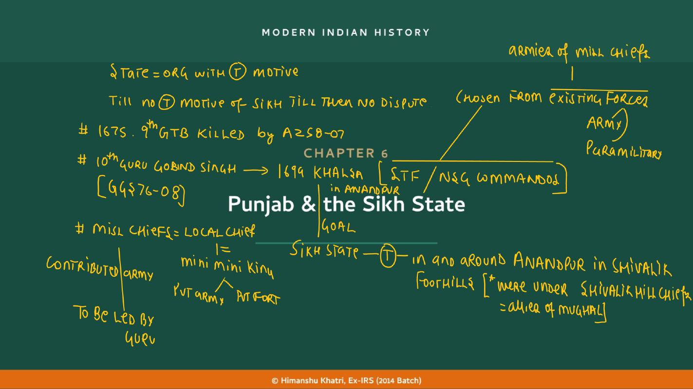
| The five Ks (Khalsa identity, 1699) | Meaning (teacher) |
|---|---|
| Kesh | Hair |
| Kangha | Comb |
| Kada | (no gloss on the board) |
| Kirpan | Dagger |
| Kachera | Lower wear |
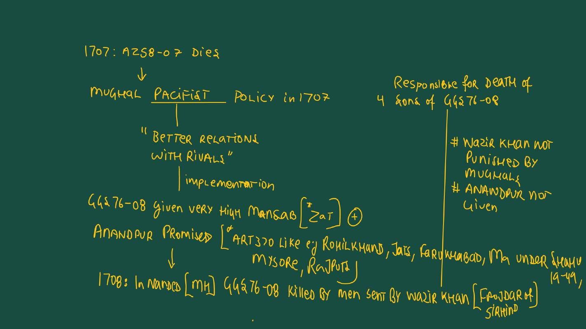
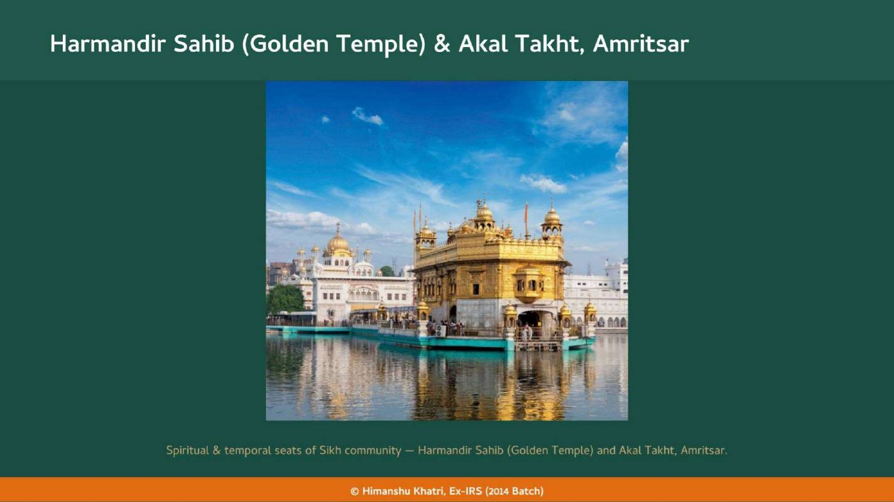
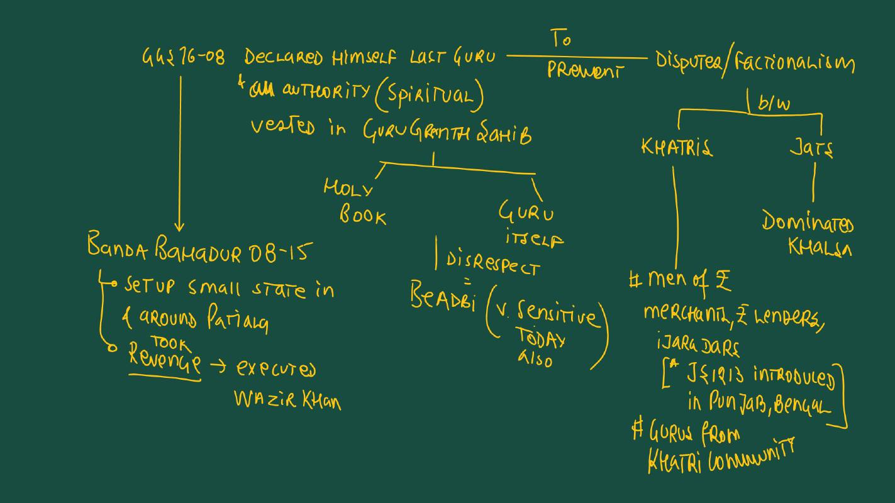
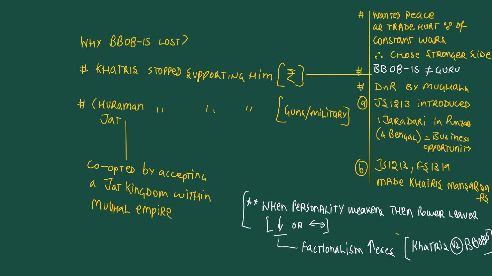
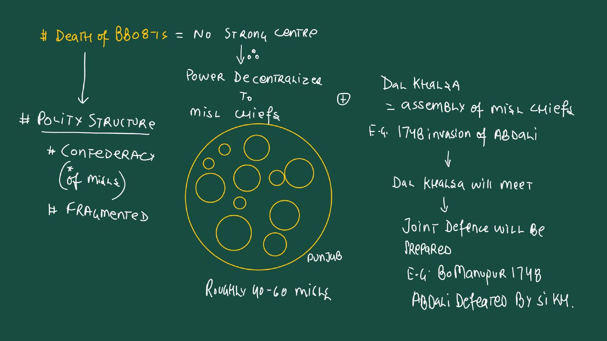
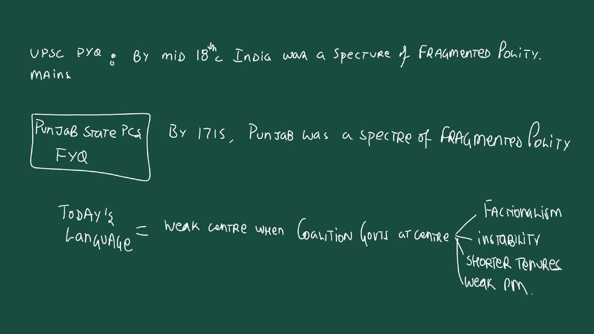
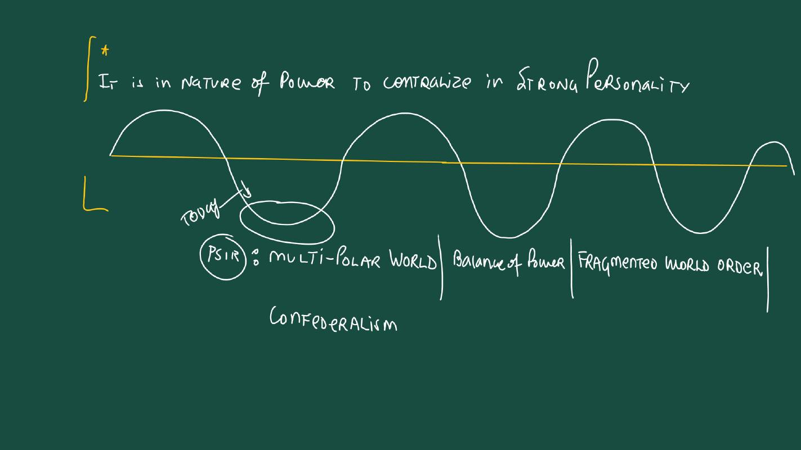
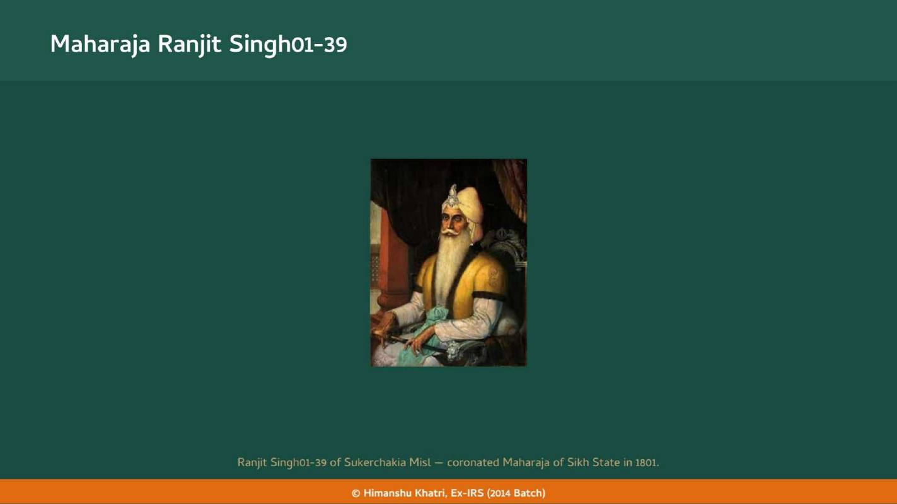
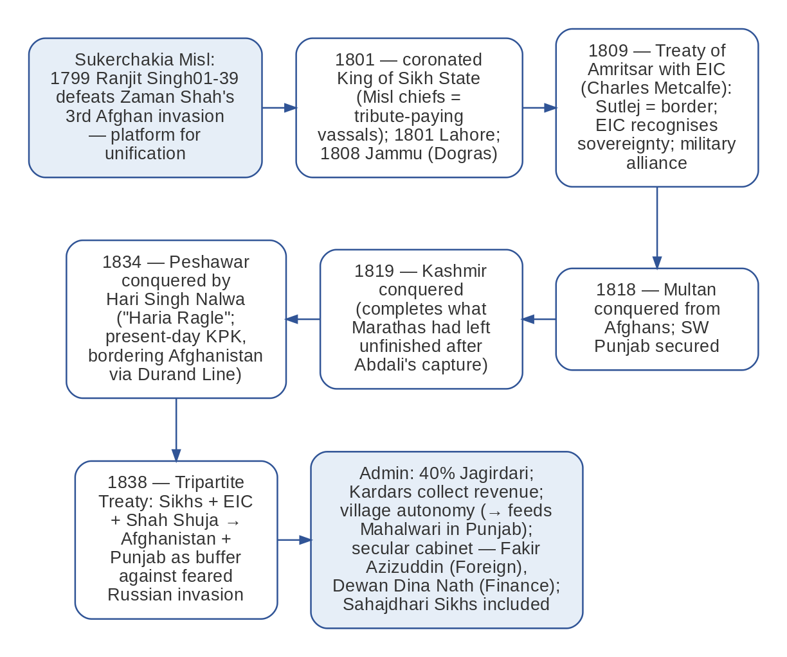
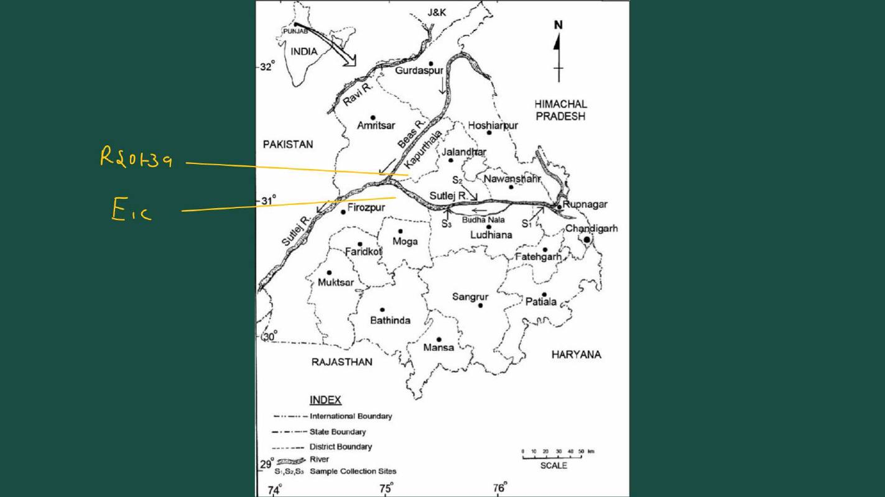
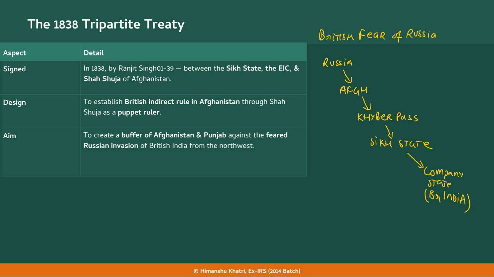
| Feature | What the class material says |
|---|---|
| How power was built | Coercion, diplomacy and careful balance between Misl chiefs, the Khalsa army, Khatri traders and non-Sikh nobles such as the Dogras (similar to the successor States) |
| Character | Militarily strong and economically prosperous |
| Revenue policy | Fair for the masses; trade flourished; a strong State delivered law and order |
| Land | Only 40% of land under the Jagirdari system; from the rest revenue went directly to the King |
| Kardar | Main income source LR collected by Kardars, the chief administrative officer at the Taluqa (district) level:revenue collector, local magistrate (judge), police chief and customs officer |
| Ijaradari | Relied on Ijaradari: instead of a fixed cash salary a Kardar often acted as an Ijaradar, but it was ensured the ryot was not oppressed by very high LR |
| Village autonomy | State authority stopped at the village level; local chiefs and clans respected (connects to the Mahalwari Settlement in Punjab, where even the British respected village autonomy) |
| Secular cabinet | Fakir Azizuddin (Muslim) as Foreign Minister; Dewan Dina Nath (Hindu) as Finance Minister |
| Culturally broad | Sahajdhari (non-Khalsa) Sikhs included; they do not keep the five Ks |
| Question | Banda Bahadur 08-15 | Ranjit Singh 01-39 |
|---|---|---|
| Commercial class | Khatri traders turned against him (trade hurt, co-opted by Ijaradari and Mansabs) | Khatri traders balanced among the pillars of his State |
| Landed groups | Jat zamindars switched (Churaman 95-21 recognised) | Misl chiefs as tribute-paying vassals; Dogras and local chiefs respected |
| Centre | No Guru authority; Mughals' Governor of Lahore sent against him | Strong king: coronation 1801, treaty with the EIC 1809 |
| Outcome | Captured 1715, executed 1716 | Prosperous State, expansion to Multan, Kashmir, Peshawar |
| Year | What happened |
|---|---|
| 1469 | Guru Nanak born (1469-1539) |
| 1606 | 5th Guru Arjan Dev executed by Jahangir 05-27: first flashpoint ★ |
| 1675 | 9th Guru Teg Bahadur executed in Delhi by Aurangzeb 58-07: second flashpoint ★ |
| 1699 | Guru Gobind Singh 76-08 founds the Khalsa at Anandpur ★ |
| 1704 | Battle of Chamkaur; Sahibzadas die |
| 1707 | Bahadur Shah grants high Mansab, promises Anandpur |
| 1708 | Guru Gobind Singh 76-08 killed at Nanded (7 October); Banda Bahadur 08-15 takes up the struggle ★ |
| 1710 | Chappar Chiri: Wazir Khan killed; Sirhind conquered ★ |
| 1715 | Banda Bahadur 08-15 defeated |
| 1716 | Banda Bahadur 08-15 executed in Delhi |
| 1748 | Dal Khalsa prepares joint defence; Manupur |
| 1770 | 12 major Misls with the Dal Khalsa |
| 1799 | Ranjit Singh 01-39 helps defeat Zaman Shah; takes Lahore (slide dating) |
| 1801 | Ranjit Singh 01-39 coronated Maharaja of the Sikh State ★ |
| 1808 | Jammu conquered from the Dogras |
| 1809 | Treaty of Amritsar (Charles Metcalfe); Sutlej as border ★ |
| 1818 | Afghans removed from Multan |
| 1819 | Kashmir conquered |
| 1834 | Peshawar conquered by Hari Singh Nalwa |
| 1838 | Tripartite Treaty: Sikhs, EIC and Shah Shuja ★ |
The Mughal pacifist policy argument (Guru Gobind Singh 76-08, Wazir Khan), Manupur 1748, and the Maratha Confederacy compared with the Misl Confederacy.
Churaman 95-21 Jat's defection from Banda Bahadur 08-15; Abdali's and Zaman Shah's invasions.
The Jagirdari Crisis worsened by Mansabs offered to Khatri traders; Jahandar Shah 12-13 and Farrukhsiyar 13-19.
The Rajputs and Mysore, the other states outside the Mughal middle path.
The EIC's Policy of Ring Fence and the later annexation of the Sikh State.
Read the question, answer in your head, then tap to check.
| State (teacher's definition)? | An organisation with a territory (T) motive; the Sikh-Mughal dispute began when Sikhs wanted a territory. |
| Four principles of Sikhism? | One formless God; direct access without rituals or priests; rejection of caste; honest living and selfless service. |
| What were the Udasis? | Four major spiritual journeys over 30 years, about 30,000 km, across India, South Asia, Tibet and Arabia. |
| What is the Langar? | Free communal kitchen at Kartarpur, to promote equality. |
| Why did Anandpur matter? | The Sikh State demand; west of Shimla, south of Chamba, under Shivalik hill chiefs who were Mughal allies. |
| Two flashpoints? | 1606 Arjan Dev (Jahangir 05-27); 1675 Teg Bahadur (Aurangzeb 58-07). |
| What was the Khalsa? | A Sikh military organisation, like NSG or STF, founded 1699 to defend the Panth and struggle for a Sikh State. |
| Five Ks? | Kesh, Kangha, Kada, Kirpan, Kachera. |
| What happened at Chamkaur (Dec 1704)? | The two elder Sahibzadas (Ajit Singh 18, Jujhar Singh 14) died. |
| Younger Sahibzadas? | Zorawar Singh (9) and Fateh Singh (6), buried alive in a wall on Wazir Khan's orders; Veer Bal Divas on 26 December. |
| Who was Wazir Khan? | The Mughal Faujdar of Sirhind; a Faujdar is a district military commander. |
| What did Bahadur Shah promise in 1707? | A high Mansab and a Sikh State at Anandpur (never fulfilled). |
| What did the Guru do on the last day (teacher)? | Declared the Guru Granth Sahib the final Guru: spiritual authority in the Holy Book. |
| Who are the Nirankaris and Namdharis? | 19th-century sects who believe in a living Guru. |
| What was the Akal Takht's role? | Seat from which Gurus issued Hukumnamas; Sikh warriors took blessings before battle; Guru Granth Sahib installed there. |
| What did Banda Bahadur 08-15 establish? | A Sikh State between the Ravi and Jamuna with its own coins, officials and seal. |
| Why did Banda Bahadur 08-15 lose? | Khatris (trade hurt; Ijaradari and Mansabs), Jat zamindars (Churaman 95-21), and he was not a Guru. |
| What are Misls? | Kinship-based clans that united in wars, otherwise independent; land in proportion to contribution. |
| What was the Dal Khalsa? | The assembly of Misl chiefs, the confederacy's weak centre. |
| Mains PYQ on fragmented polity? | By the mid-18th century India was a spectre of fragmented polity; Punjab FYQ: by 1715. |
| How did Ranjit Singh 01-39 rise? | Zaman Shah's invasions, Sukerchakia Misl, Lahore from the Bhangi Misl, coronation 1801; Misl chiefs as vassals. |
| Treaty of Amritsar outcomes? | Sovereignty recognised; military alliance; Sutlej border; free expansion north of the Sutlej. |
| Conquests after 1809? | Multan 1818; Kashmir 1819; Peshawar 1834. |
| Why was Kashmir's capture notable? | The Marathas retook Punjab in 1758 but not Kashmir; Ranjit Singh 01-39 completed it. |
| Tripartite Treaty 1838? | Sikh State, EIC and Shah Shuja: a puppet Shah Shuja and a buffer against Russia. |
| How did the Kardar work? | Chief administrative officer of a Taluqa: revenue collector, magistrate, police chief and customs officer. |
| Why is Ranjit Singh 01-39's State called secular? | Fakir Azizuddin (Muslim) as Foreign Minister and Dewan Dina Nath (Hindu) as Finance Minister; Sahajdhari Sikhs included. |
| Who are Sahajdhari Sikhs? | Non-Khalsa Sikhs who do not maintain the five Ks. |
Tap the card to flip.